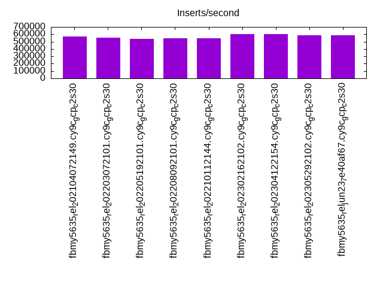
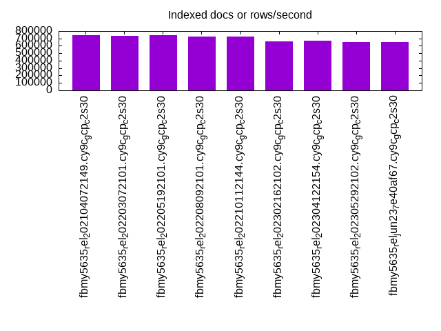
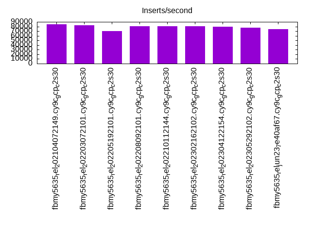
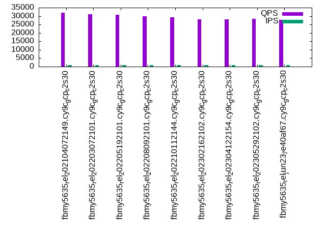
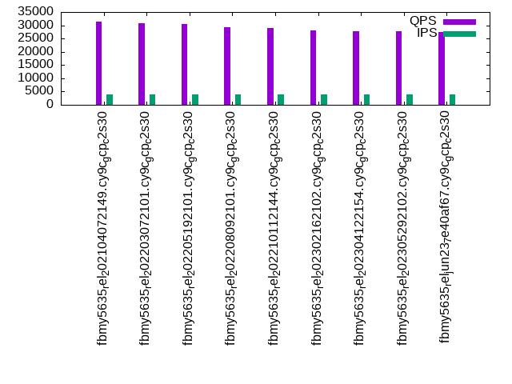
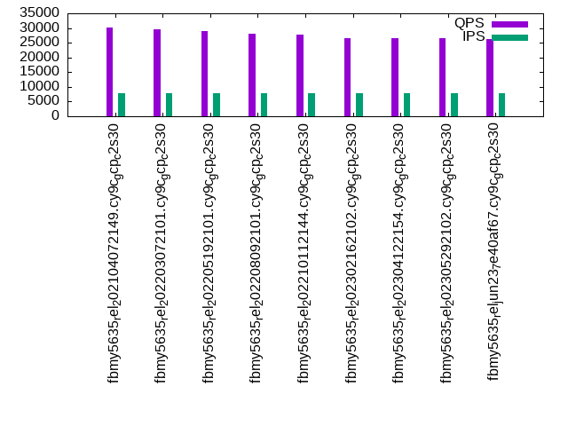

This is a report for the insert benchmark with 4000M docs and 8 client(s). It is generated by scripts (bash, awk, sed) and Tufte might not be impressed. An overview of the insert benchmark is here and a short update is here. Below, by DBMS, I mean DBMS+version.config. An example is my8020.c10b40 where my means MySQL, 8020 is version 8.0.20 and c10b40 is the name for the configuration file.
The test server is a c2-standard-30 from GCP with 15 cores, hyperthreads disabled, 120G RAM, XFS + SW RAID 0 on 4 NVMe devices (1.5TB). The benchmark was run with 8 client and there were 1 or 3 connections per client (1 for queries or inserts without rate limits, 1+1 for rate limited inserts+deletes). There are 8 tables, client per table. It loads 500M rows per table without secondary indexes, creates secondary indexes, then inserts 200M rows with a delete per insert to avoid growing the table. It then does 3 read+write tests for 3600s each that do queries as fast as possible with 100, 500 and then 1000 inserts/second/client concurrent with the queries and 1000 deletes/second to avoid growing the table. The database is larger than memory.
The tested DBMS are:
The numbers are inserts/s for l.i0 and l.i1, indexed docs (or rows) /s for l.x and queries/s for q*.2. The values are the average rate over the entire test for inserts (IPS) and queries (QPS). The range of values for IPS and QPS is split into 3 parts: bottom 25%, middle 50%, top 25%. Values in the bottom 25% have a red background, values in the top 25% have a green background and values in the middle have no color. A gray background is used for values that can be ignored because the DBMS did not sustain the target insert rate. Red backgrounds are not used when the minimum value is within 80% of the max value.
| dbms | l.i0 | l.x | l.i1 | q100.1 | q500.1 | q1000.1 |
|---|---|---|---|---|---|---|
| fbmy5635_rel_202104072149.cy9c_gcp_c2s30 | 567134 | 743237 | 84971 | 31874 | 31475 | 30285 |
| fbmy5635_rel_202203072101.cy9c_gcp_c2s30 | 556328 | 739253 | 83108 | 31227 | 30649 | 29564 |
| fbmy5635_rel_202205192101.cy9c_gcp_c2s30 | 536769 | 742961 | 70553 | 30700 | 30482 | 28890 |
| fbmy5635_rel_202208092101.cy9c_gcp_c2s30 | 546896 | 722692 | 80972 | 29764 | 29242 | 28044 |
| fbmy5635_rel_202210112144.cy9c_gcp_c2s30 | 544440 | 725576 | 80633 | 29214 | 28903 | 27684 |
| fbmy5635_rel_202302162102.cy9c_gcp_c2s30 | 603682 | 662378 | 80281 | 28077 | 27964 | 26538 |
| fbmy5635_rel_202304122154.cy9c_gcp_c2s30 | 601052 | 666239 | 79713 | 28063 | 27808 | 26470 |
| fbmy5635_rel_202305292102.cy9c_gcp_c2s30 | 584112 | 653718 | 77685 | 28350 | 27900 | 26511 |
| fbmy5635_rel_jun23_7e40af67.cy9c_gcp_c2s30 | 583005 | 650000 | 74232 | 27781 | 27535 | 26127 |
This table has relative throughput, throughput for the DBMS relative to the DBMS in the first line, using the absolute throughput from the previous table. Values less than 0.95 have a yellow background. Values greater than 1.05 have a blue background.
| dbms | l.i0 | l.x | l.i1 | q100.1 | q500.1 | q1000.1 |
|---|---|---|---|---|---|---|
| fbmy5635_rel_202104072149.cy9c_gcp_c2s30 | 1.00 | 1.00 | 1.00 | 1.00 | 1.00 | 1.00 |
| fbmy5635_rel_202203072101.cy9c_gcp_c2s30 | 0.98 | 0.99 | 0.98 | 0.98 | 0.97 | 0.98 |
| fbmy5635_rel_202205192101.cy9c_gcp_c2s30 | 0.95 | 1.00 | 0.83 | 0.96 | 0.97 | 0.95 |
| fbmy5635_rel_202208092101.cy9c_gcp_c2s30 | 0.96 | 0.97 | 0.95 | 0.93 | 0.93 | 0.93 |
| fbmy5635_rel_202210112144.cy9c_gcp_c2s30 | 0.96 | 0.98 | 0.95 | 0.92 | 0.92 | 0.91 |
| fbmy5635_rel_202302162102.cy9c_gcp_c2s30 | 1.06 | 0.89 | 0.94 | 0.88 | 0.89 | 0.88 |
| fbmy5635_rel_202304122154.cy9c_gcp_c2s30 | 1.06 | 0.90 | 0.94 | 0.88 | 0.88 | 0.87 |
| fbmy5635_rel_202305292102.cy9c_gcp_c2s30 | 1.03 | 0.88 | 0.91 | 0.89 | 0.89 | 0.88 |
| fbmy5635_rel_jun23_7e40af67.cy9c_gcp_c2s30 | 1.03 | 0.87 | 0.87 | 0.87 | 0.87 | 0.86 |
This lists the average rate of inserts/s for the tests that do inserts concurrent with queries. For such tests the query rate is listed in the table above. The read+write tests are setup so that the insert rate should match the target rate every second. Cells that are not at least 95% of the target have a red background to indicate a failure to satisfy the target.
| dbms | q100.1 | q500.1 | q1000.1 |
|---|---|---|---|
| fbmy5635_rel_202104072149.cy9c_gcp_c2s30 | 797 | 3987 | 7973 |
| fbmy5635_rel_202203072101.cy9c_gcp_c2s30 | 797 | 3986 | 7973 |
| fbmy5635_rel_202205192101.cy9c_gcp_c2s30 | 797 | 3987 | 7976 |
| fbmy5635_rel_202208092101.cy9c_gcp_c2s30 | 797 | 3987 | 7973 |
| fbmy5635_rel_202210112144.cy9c_gcp_c2s30 | 797 | 3987 | 7973 |
| fbmy5635_rel_202302162102.cy9c_gcp_c2s30 | 789 | 3946 | 7934 |
| fbmy5635_rel_202304122154.cy9c_gcp_c2s30 | 788 | 3946 | 7930 |
| fbmy5635_rel_202305292102.cy9c_gcp_c2s30 | 791 | 3959 | 7947 |
| fbmy5635_rel_jun23_7e40af67.cy9c_gcp_c2s30 | 793 | 3965 | 7951 |
| target | 800 | 4000 | 8000 |
l.i0: load without secondary indexes. Graphs for performance per 1-second interval are here.
Average throughput:
Insert response time histogram: each cell has the percentage of responses that take <= the time in the header and max is the max response time in seconds. For the max column values in the top 25% of the range have a red background and in the bottom 25% of the range have a green background. The red background is not used when the min value is within 80% of the max value.
| dbms | 256us | 1ms | 4ms | 16ms | 64ms | 256ms | 1s | 4s | 16s | gt | max |
|---|---|---|---|---|---|---|---|---|---|---|---|
| fbmy5635_rel_202104072149.cy9c_gcp_c2s30 | 17.912 | 82.029 | 0.042 | 0.002 | 0.013 | 0.001 | 0.446 | ||||
| fbmy5635_rel_202203072101.cy9c_gcp_c2s30 | 15.527 | 84.414 | 0.042 | 0.002 | 0.013 | 0.001 | 0.439 | ||||
| fbmy5635_rel_202205192101.cy9c_gcp_c2s30 | 16.442 | 83.504 | 0.038 | 0.002 | 0.013 | 0.001 | 0.463 | ||||
| fbmy5635_rel_202208092101.cy9c_gcp_c2s30 | 15.553 | 84.391 | 0.040 | 0.002 | 0.013 | 0.001 | 0.413 | ||||
| fbmy5635_rel_202210112144.cy9c_gcp_c2s30 | 15.679 | 84.265 | 0.039 | 0.003 | 0.013 | 0.001 | 0.436 | ||||
| fbmy5635_rel_202302162102.cy9c_gcp_c2s30 | 18.654 | 81.319 | 0.012 | 0.001 | 0.013 | nonzero | 0.356 | ||||
| fbmy5635_rel_202304122154.cy9c_gcp_c2s30 | 19.541 | 80.432 | 0.012 | 0.001 | 0.013 | nonzero | 0.355 | ||||
| fbmy5635_rel_202305292102.cy9c_gcp_c2s30 | 18.692 | 81.279 | 0.013 | 0.001 | 0.013 | nonzero | 0.355 | ||||
| fbmy5635_rel_jun23_7e40af67.cy9c_gcp_c2s30 | 20.027 | 79.944 | 0.014 | 0.001 | 0.013 | 0.001 | 0.369 |
Performance metrics for the DBMS listed above. Some are normalized by throughput, others are not. Legend for results is here.
ips qps rps rmbps wps wmbps rpq rkbpq wpi wkbpi csps cpups cspq cpupq dbgb1 dbgb2 rss maxop p50 p99 tag 567134 0 0 0.1 789.6 173.0 0.000 0.000 0.001 0.312 80468 74.0 0.142 20 125.7 127.1 NA 0.446 72421 48639 4000m.fbmy5635_rel_202104072149.cy9c_gcp_c2s30 556328 0 1 0.3 770.6 172.5 0.000 0.001 0.001 0.317 81384 73.6 0.146 20 125.5 127.1 NA 0.439 71023 48947 4000m.fbmy5635_rel_202203072101.cy9c_gcp_c2s30 536769 0 0 0.1 722.3 161.4 0.000 0.000 0.001 0.308 78403 73.2 0.146 20 125.7 127.3 NA 0.463 68324 47148 4000m.fbmy5635_rel_202205192101.cy9c_gcp_c2s30 546896 0 1 0.2 753.5 167.0 0.000 0.000 0.001 0.313 79477 73.2 0.145 20 125.7 127.3 NA 0.413 69724 48546 4000m.fbmy5635_rel_202208092101.cy9c_gcp_c2s30 544440 0 0 0.1 754.6 166.7 0.000 0.000 0.001 0.314 78906 73.1 0.145 20 125.7 127.3 NA 0.436 69524 47248 4000m.fbmy5635_rel_202210112144.cy9c_gcp_c2s30 603682 0 0 0.0 562.1 128.1 0.000 0.000 0.001 0.217 83565 73.6 0.138 18 125.4 127.0 NA 0.356 75445 54241 4000m.fbmy5635_rel_202302162102.cy9c_gcp_c2s30 601052 0 0 0.0 562.6 128.2 0.000 0.000 0.001 0.218 82046 73.5 0.137 18 124.2 125.8 NA 0.355 75218 54361 4000m.fbmy5635_rel_202304122154.cy9c_gcp_c2s30 584112 0 0 0.0 551.8 128.3 0.000 0.000 0.001 0.225 83088 73.4 0.142 19 124.8 126.4 NA 0.355 73004 52443 4000m.fbmy5635_rel_202305292102.cy9c_gcp_c2s30 583005 0 0 0.0 559.2 128.9 0.000 0.000 0.001 0.226 83446 73.4 0.143 19 125.3 126.9 NA 0.369 72720 51543 4000m.fbmy5635_rel_jun23_7e40af67.cy9c_gcp_c2s30
l.x: create secondary indexes.
Average throughput:
Performance metrics for the DBMS listed above. Some are normalized by throughput, others are not. Legend for results is here.
ips qps rps rmbps wps wmbps rpq rkbpq wpi wkbpi csps cpups cspq cpupq dbgb1 dbgb2 rss maxop p50 p99 tag 743237 0 565 115.9 289.2 84.7 0.001 0.160 0.000 0.117 2252 50.4 0.003 10 257.8 259.2 NA 0.002 NA NA 4000m.fbmy5635_rel_202104072149.cy9c_gcp_c2s30 739253 0 554 111.9 285.9 82.8 0.001 0.155 0.000 0.115 2199 50.3 0.003 10 257.8 259.4 NA 0.003 NA NA 4000m.fbmy5635_rel_202203072101.cy9c_gcp_c2s30 742961 0 550 111.7 287.2 83.8 0.001 0.154 0.000 0.116 2275 50.4 0.003 10 257.8 259.4 NA 0.003 NA NA 4000m.fbmy5635_rel_202205192101.cy9c_gcp_c2s30 722692 0 515 104.1 282.1 79.3 0.001 0.147 0.000 0.112 2171 50.3 0.003 10 257.8 259.4 NA 0.003 NA NA 4000m.fbmy5635_rel_202208092101.cy9c_gcp_c2s30 725576 0 531 106.4 280.8 81.5 0.001 0.150 0.000 0.115 2122 50.5 0.003 10 257.8 259.4 NA 0.004 NA NA 4000m.fbmy5635_rel_202210112144.cy9c_gcp_c2s30 662378 0 477 96.8 252.7 74.6 0.001 0.150 0.000 0.115 1882 50.3 0.003 11 257.8 259.4 NA 0.004 NA NA 4000m.fbmy5635_rel_202302162102.cy9c_gcp_c2s30 666239 0 476 96.9 254.4 74.6 0.001 0.149 0.000 0.115 1881 50.4 0.003 11 256.5 258.1 NA 0.005 NA NA 4000m.fbmy5635_rel_202304122154.cy9c_gcp_c2s30 653718 0 473 96.2 250.7 74.4 0.001 0.151 0.000 0.117 1824 50.0 0.003 11 257.2 258.7 NA 0.002 NA NA 4000m.fbmy5635_rel_202305292102.cy9c_gcp_c2s30 650000 0 483 97.2 248.4 73.9 0.001 0.153 0.000 0.116 1795 50.2 0.003 12 257.7 259.3 NA 0.004 NA NA 4000m.fbmy5635_rel_jun23_7e40af67.cy9c_gcp_c2s30
l.i1: continue load after secondary indexes created. Graphs for performance per 1-second interval are here.
Average throughput:
Insert response time histogram: each cell has the percentage of responses that take <= the time in the header and max is the max response time in seconds. For the max column values in the top 25% of the range have a red background and in the bottom 25% of the range have a green background. The red background is not used when the min value is within 80% of the max value.
| dbms | 256us | 1ms | 4ms | 16ms | 64ms | 256ms | 1s | 4s | 16s | gt | max |
|---|---|---|---|---|---|---|---|---|---|---|---|
| fbmy5635_rel_202104072149.cy9c_gcp_c2s30 | 0.035 | 35.195 | 64.624 | 0.135 | 0.009 | 0.002 | 0.475 | ||||
| fbmy5635_rel_202203072101.cy9c_gcp_c2s30 | 0.053 | 31.680 | 68.120 | 0.137 | 0.009 | 0.001 | 0.434 | ||||
| fbmy5635_rel_202205192101.cy9c_gcp_c2s30 | 0.018 | 29.699 | 68.527 | 1.669 | 0.065 | 0.021 | nonzero | 0.001 | nonzero | 194.078 | |
| fbmy5635_rel_202208092101.cy9c_gcp_c2s30 | 0.017 | 27.335 | 72.494 | 0.146 | 0.008 | 0.001 | 0.453 | ||||
| fbmy5635_rel_202210112144.cy9c_gcp_c2s30 | 0.014 | 26.494 | 73.337 | 0.147 | 0.007 | 0.001 | 0.432 | ||||
| fbmy5635_rel_202302162102.cy9c_gcp_c2s30 | 0.014 | 28.633 | 71.172 | 0.162 | 0.018 | 0.001 | 0.409 | ||||
| fbmy5635_rel_202304122154.cy9c_gcp_c2s30 | 0.021 | 27.840 | 71.912 | 0.198 | 0.028 | 0.001 | 0.440 | ||||
| fbmy5635_rel_202305292102.cy9c_gcp_c2s30 | 0.005 | 29.571 | 70.009 | 0.321 | 0.093 | nonzero | 0.560 | ||||
| fbmy5635_rel_jun23_7e40af67.cy9c_gcp_c2s30 | 0.006 | 29.112 | 70.236 | 0.431 | 0.206 | 0.010 | 0.537 |
Delete response time histogram: each cell has the percentage of responses that take <= the time in the header and max is the max response time in seconds. For the max column values in the top 25% of the range have a red background and in the bottom 25% of the range have a green background. The red background is not used when the min value is within 80% of the max value.
| dbms | 256us | 1ms | 4ms | 16ms | 64ms | 256ms | 1s | 4s | 16s | gt | max |
|---|---|---|---|---|---|---|---|---|---|---|---|
| fbmy5635_rel_202104072149.cy9c_gcp_c2s30 | 0.026 | 31.330 | 68.307 | 0.311 | 0.023 | 0.002 | 0.480 | ||||
| fbmy5635_rel_202203072101.cy9c_gcp_c2s30 | 0.050 | 28.880 | 70.735 | 0.312 | 0.022 | 0.001 | 0.434 | ||||
| fbmy5635_rel_202205192101.cy9c_gcp_c2s30 | 0.018 | 27.644 | 70.406 | 1.832 | 0.077 | 0.022 | nonzero | 0.001 | nonzero | 194.079 | |
| fbmy5635_rel_202208092101.cy9c_gcp_c2s30 | 0.016 | 24.781 | 74.833 | 0.348 | 0.022 | 0.001 | 0.453 | ||||
| fbmy5635_rel_202210112144.cy9c_gcp_c2s30 | 0.019 | 24.853 | 74.759 | 0.346 | 0.022 | 0.001 | 0.432 | ||||
| fbmy5635_rel_202302162102.cy9c_gcp_c2s30 | 0.012 | 25.003 | 74.623 | 0.327 | 0.035 | 0.001 | 0.409 | ||||
| fbmy5635_rel_202304122154.cy9c_gcp_c2s30 | 0.018 | 24.506 | 75.069 | 0.362 | 0.045 | 0.001 | 0.455 | ||||
| fbmy5635_rel_202305292102.cy9c_gcp_c2s30 | 0.003 | 25.140 | 74.246 | 0.496 | 0.114 | 0.001 | 0.876 | ||||
| fbmy5635_rel_jun23_7e40af67.cy9c_gcp_c2s30 | 0.004 | 24.624 | 74.531 | 0.604 | 0.227 | 0.011 | 0.849 |
Performance metrics for the DBMS listed above. Some are normalized by throughput, others are not. Legend for results is here.
ips qps rps rmbps wps wmbps rpq rkbpq wpi wkbpi csps cpups cspq cpupq dbgb1 dbgb2 rss maxop p50 p99 tag 84971 0 514 66.4 878.2 172.7 0.006 0.800 0.010 2.081 64933 65.2 0.764 115 283.4 285.2 NA 0.475 10738 7442 4000m.fbmy5635_rel_202104072149.cy9c_gcp_c2s30 83108 0 499 65.2 855.4 172.1 0.006 0.803 0.010 2.121 66790 65.0 0.804 117 281.5 281.8 NA 0.434 10488 8091 4000m.fbmy5635_rel_202203072101.cy9c_gcp_c2s30 70553 0 469 55.3 685.6 137.6 0.007 0.803 0.010 1.998 65442 58.4 0.928 124 285.1 285.2 NA 194.078 10093 0 4000m.fbmy5635_rel_202205192101.cy9c_gcp_c2s30 80972 0 512 66.9 875.4 169.3 0.006 0.846 0.011 2.141 61677 64.4 0.762 119 279.1 279.4 NA 0.453 10289 8041 4000m.fbmy5635_rel_202208092101.cy9c_gcp_c2s30 80633 0 507 66.3 870.1 168.7 0.006 0.842 0.011 2.143 60988 64.4 0.756 120 278.6 278.9 NA 0.432 10198 7991 4000m.fbmy5635_rel_202210112144.cy9c_gcp_c2s30 80281 0 492 52.6 674.6 140.6 0.006 0.671 0.008 1.793 61130 65.0 0.761 121 284.6 284.8 NA 0.409 9839 7095 4000m.fbmy5635_rel_202302162102.cy9c_gcp_c2s30 79713 0 486 52.0 666.0 139.0 0.006 0.668 0.008 1.785 61108 64.4 0.767 121 285.0 285.2 NA 0.440 9789 6495 4000m.fbmy5635_rel_202304122154.cy9c_gcp_c2s30 77685 0 504 50.7 612.7 137.7 0.006 0.669 0.008 1.815 62730 64.4 0.807 124 289.1 289.3 NA 0.560 9689 549 4000m.fbmy5635_rel_202305292102.cy9c_gcp_c2s30 74232 0 487 49.0 577.0 131.5 0.007 0.676 0.008 1.813 61093 62.4 0.823 126 286.8 286.9 NA 0.537 9544 250 4000m.fbmy5635_rel_jun23_7e40af67.cy9c_gcp_c2s30
q100.1: range queries with 100 insert/s per client. Graphs for performance per 1-second interval are here.
Average throughput:
Query response time histogram: each cell has the percentage of responses that take <= the time in the header and max is the max response time in seconds. For max values in the top 25% of the range have a red background and in the bottom 25% of the range have a green background. The red background is not used when the min value is within 80% of the max value.
| dbms | 256us | 1ms | 4ms | 16ms | 64ms | 256ms | 1s | 4s | 16s | gt | max |
|---|---|---|---|---|---|---|---|---|---|---|---|
| fbmy5635_rel_202104072149.cy9c_gcp_c2s30 | 72.850 | 26.999 | 0.149 | 0.001 | nonzero | nonzero | 0.102 | ||||
| fbmy5635_rel_202203072101.cy9c_gcp_c2s30 | 70.006 | 29.854 | 0.139 | 0.001 | nonzero | nonzero | 0.137 | ||||
| fbmy5635_rel_202205192101.cy9c_gcp_c2s30 | 68.810 | 30.964 | 0.223 | 0.003 | nonzero | nonzero | 0.080 | ||||
| fbmy5635_rel_202208092101.cy9c_gcp_c2s30 | 60.839 | 39.024 | 0.136 | 0.002 | nonzero | 0.061 | |||||
| fbmy5635_rel_202210112144.cy9c_gcp_c2s30 | 55.975 | 43.867 | 0.158 | 0.001 | nonzero | nonzero | 0.116 | ||||
| fbmy5635_rel_202302162102.cy9c_gcp_c2s30 | 54.354 | 45.312 | 0.330 | 0.004 | nonzero | nonzero | 0.134 | ||||
| fbmy5635_rel_202304122154.cy9c_gcp_c2s30 | 52.087 | 47.651 | 0.261 | 0.001 | nonzero | nonzero | 0.112 | ||||
| fbmy5635_rel_202305292102.cy9c_gcp_c2s30 | 55.984 | 43.697 | 0.317 | 0.002 | nonzero | nonzero | 0.111 | ||||
| fbmy5635_rel_jun23_7e40af67.cy9c_gcp_c2s30 | 49.784 | 49.882 | 0.333 | 0.001 | nonzero | 0.057 |
Insert response time histogram: each cell has the percentage of responses that take <= the time in the header and max is the max response time in seconds. For max values in the top 25% of the range have a red background and in the bottom 25% of the range have a green background. The red background is not used when the min value is within 80% of the max value.
| dbms | 256us | 1ms | 4ms | 16ms | 64ms | 256ms | 1s | 4s | 16s | gt | max |
|---|---|---|---|---|---|---|---|---|---|---|---|
| fbmy5635_rel_202104072149.cy9c_gcp_c2s30 | 5.818 | 94.141 | 0.042 | 0.015 | |||||||
| fbmy5635_rel_202203072101.cy9c_gcp_c2s30 | 2.576 | 97.382 | 0.042 | 0.014 | |||||||
| fbmy5635_rel_202205192101.cy9c_gcp_c2s30 | 0.865 | 99.021 | 0.104 | 0.009 | 0.002 | 0.067 | |||||
| fbmy5635_rel_202208092101.cy9c_gcp_c2s30 | 0.712 | 99.238 | 0.050 | 0.014 | |||||||
| fbmy5635_rel_202210112144.cy9c_gcp_c2s30 | 0.681 | 99.247 | 0.073 | 0.015 | |||||||
| fbmy5635_rel_202302162102.cy9c_gcp_c2s30 | 1.285 | 98.691 | 0.024 | 0.009 | |||||||
| fbmy5635_rel_202304122154.cy9c_gcp_c2s30 | 1.168 | 98.811 | 0.021 | 0.009 | |||||||
| fbmy5635_rel_202305292102.cy9c_gcp_c2s30 | 2.163 | 97.799 | 0.038 | 0.014 | |||||||
| fbmy5635_rel_jun23_7e40af67.cy9c_gcp_c2s30 | 1.595 | 98.372 | 0.031 | 0.002 | 0.076 |
Delete response time histogram: each cell has the percentage of responses that take <= the time in the header and max is the max response time in seconds. For max values in the top 25% of the range have a red background and in the bottom 25% of the range have a green background. The red background is not used when the min value is within 80% of the max value.
| dbms | 256us | 1ms | 4ms | 16ms | 64ms | 256ms | 1s | 4s | 16s | gt | max |
|---|---|---|---|---|---|---|---|---|---|---|---|
| fbmy5635_rel_202104072149.cy9c_gcp_c2s30 | 4.564 | 95.365 | 0.068 | 0.003 | 0.019 | ||||||
| fbmy5635_rel_202203072101.cy9c_gcp_c2s30 | 2.356 | 97.561 | 0.083 | 0.016 | |||||||
| fbmy5635_rel_202205192101.cy9c_gcp_c2s30 | 2.057 | 97.816 | 0.122 | 0.003 | 0.002 | 0.067 | |||||
| fbmy5635_rel_202208092101.cy9c_gcp_c2s30 | 1.429 | 98.470 | 0.095 | 0.005 | 0.023 | ||||||
| fbmy5635_rel_202210112144.cy9c_gcp_c2s30 | 0.884 | 99.019 | 0.090 | 0.007 | 0.028 | ||||||
| fbmy5635_rel_202302162102.cy9c_gcp_c2s30 | 1.425 | 98.483 | 0.092 | 0.010 | |||||||
| fbmy5635_rel_202304122154.cy9c_gcp_c2s30 | 1.693 | 98.241 | 0.066 | 0.011 | |||||||
| fbmy5635_rel_202305292102.cy9c_gcp_c2s30 | 2.050 | 97.849 | 0.097 | 0.003 | 0.027 | ||||||
| fbmy5635_rel_jun23_7e40af67.cy9c_gcp_c2s30 | 1.373 | 98.552 | 0.073 | 0.002 | 0.076 |
Performance metrics for the DBMS listed above. Some are normalized by throughput, others are not. Legend for results is here.
ips qps rps rmbps wps wmbps rpq rkbpq wpi wkbpi csps cpups cspq cpupq dbgb1 dbgb2 rss maxop p50 p99 tag 797 31874 850 9.7 26.3 4.2 0.027 0.313 0.033 5.345 127008 53.0 3.985 249 277.0 277.4 NA 0.102 4061 1758 4000m.fbmy5635_rel_202104072149.cy9c_gcp_c2s30 797 31227 860 8.5 17.2 2.5 0.028 0.279 0.022 3.222 124860 52.6 3.998 253 277.1 278.0 NA 0.137 3949 1982 4000m.fbmy5635_rel_202203072101.cy9c_gcp_c2s30 797 30700 890 12.1 32.4 4.8 0.029 0.404 0.041 6.125 122305 53.7 3.984 262 276.7 277.6 NA 0.080 3932 1678 4000m.fbmy5635_rel_202205192101.cy9c_gcp_c2s30 797 29764 804 7.5 19.9 2.7 0.027 0.260 0.025 3.431 120146 52.4 4.037 264 277.8 278.7 NA 0.061 3804 1998 4000m.fbmy5635_rel_202208092101.cy9c_gcp_c2s30 797 29214 840 8.0 21.2 3.1 0.029 0.281 0.027 3.956 118383 52.5 4.052 270 277.5 278.3 NA 0.116 3724 1999 4000m.fbmy5635_rel_202210112144.cy9c_gcp_c2s30 789 28077 969 10.0 17.7 2.8 0.035 0.366 0.022 3.696 113334 51.8 4.037 277 283.3 284.2 NA 0.134 3660 1726 4000m.fbmy5635_rel_202302162102.cy9c_gcp_c2s30 788 28063 951 10.3 20.1 3.1 0.034 0.376 0.025 3.982 113393 52.1 4.041 278 283.2 284.0 NA 0.112 3660 1726 4000m.fbmy5635_rel_202304122154.cy9c_gcp_c2s30 791 28350 1000 10.7 25.2 4.1 0.035 0.387 0.032 5.294 114361 52.5 4.034 278 282.6 283.4 NA 0.111 3692 1630 4000m.fbmy5635_rel_202305292102.cy9c_gcp_c2s30 793 27781 1010 10.3 19.5 3.0 0.036 0.379 0.025 3.821 112492 52.3 4.049 282 282.6 283.5 NA 0.057 3580 1838 4000m.fbmy5635_rel_jun23_7e40af67.cy9c_gcp_c2s30
q500.1: range queries with 500 insert/s per client. Graphs for performance per 1-second interval are here.
Average throughput:
Query response time histogram: each cell has the percentage of responses that take <= the time in the header and max is the max response time in seconds. For max values in the top 25% of the range have a red background and in the bottom 25% of the range have a green background. The red background is not used when the min value is within 80% of the max value.
| dbms | 256us | 1ms | 4ms | 16ms | 64ms | 256ms | 1s | 4s | 16s | gt | max |
|---|---|---|---|---|---|---|---|---|---|---|---|
| fbmy5635_rel_202104072149.cy9c_gcp_c2s30 | 68.166 | 31.826 | 0.007 | nonzero | nonzero | 0.038 | |||||
| fbmy5635_rel_202203072101.cy9c_gcp_c2s30 | 63.703 | 36.288 | 0.008 | nonzero | nonzero | 0.049 | |||||
| fbmy5635_rel_202205192101.cy9c_gcp_c2s30 | 63.089 | 36.903 | 0.007 | nonzero | nonzero | 0.046 | |||||
| fbmy5635_rel_202208092101.cy9c_gcp_c2s30 | 52.540 | 47.451 | 0.009 | nonzero | 0.001 | 0.049 | |||||
| fbmy5635_rel_202210112144.cy9c_gcp_c2s30 | 48.252 | 51.738 | 0.009 | nonzero | 0.001 | 0.039 | |||||
| fbmy5635_rel_202302162102.cy9c_gcp_c2s30 | 45.306 | 54.681 | 0.011 | nonzero | 0.001 | 0.042 | |||||
| fbmy5635_rel_202304122154.cy9c_gcp_c2s30 | 43.004 | 56.982 | 0.013 | nonzero | 0.001 | 0.042 | |||||
| fbmy5635_rel_202305292102.cy9c_gcp_c2s30 | 43.597 | 56.392 | 0.010 | nonzero | 0.001 | 0.042 | |||||
| fbmy5635_rel_jun23_7e40af67.cy9c_gcp_c2s30 | 39.031 | 60.957 | 0.012 | nonzero | 0.001 | 0.041 |
Insert response time histogram: each cell has the percentage of responses that take <= the time in the header and max is the max response time in seconds. For max values in the top 25% of the range have a red background and in the bottom 25% of the range have a green background. The red background is not used when the min value is within 80% of the max value.
| dbms | 256us | 1ms | 4ms | 16ms | 64ms | 256ms | 1s | 4s | 16s | gt | max |
|---|---|---|---|---|---|---|---|---|---|---|---|
| fbmy5635_rel_202104072149.cy9c_gcp_c2s30 | 20.985 | 79.000 | 0.014 | 0.001 | 0.033 | ||||||
| fbmy5635_rel_202203072101.cy9c_gcp_c2s30 | 5.323 | 94.599 | 0.076 | 0.001 | 0.035 | ||||||
| fbmy5635_rel_202205192101.cy9c_gcp_c2s30 | 3.557 | 96.422 | 0.019 | 0.001 | 0.046 | ||||||
| fbmy5635_rel_202208092101.cy9c_gcp_c2s30 | 1.871 | 97.831 | 0.298 | 0.001 | 0.029 | ||||||
| fbmy5635_rel_202210112144.cy9c_gcp_c2s30 | 0.694 | 98.515 | 0.788 | 0.003 | 0.038 | ||||||
| fbmy5635_rel_202302162102.cy9c_gcp_c2s30 | 2.760 | 95.499 | 1.734 | 0.007 | 0.039 | ||||||
| fbmy5635_rel_202304122154.cy9c_gcp_c2s30 | 2.014 | 89.687 | 8.283 | 0.017 | 0.039 | ||||||
| fbmy5635_rel_202305292102.cy9c_gcp_c2s30 | 4.739 | 95.215 | 0.045 | 0.001 | 0.037 | ||||||
| fbmy5635_rel_jun23_7e40af67.cy9c_gcp_c2s30 | 3.336 | 92.348 | 4.309 | 0.007 | 0.020 |
Delete response time histogram: each cell has the percentage of responses that take <= the time in the header and max is the max response time in seconds. For max values in the top 25% of the range have a red background and in the bottom 25% of the range have a green background. The red background is not used when the min value is within 80% of the max value.
| dbms | 256us | 1ms | 4ms | 16ms | 64ms | 256ms | 1s | 4s | 16s | gt | max |
|---|---|---|---|---|---|---|---|---|---|---|---|
| fbmy5635_rel_202104072149.cy9c_gcp_c2s30 | 21.126 | 78.800 | 0.066 | 0.007 | 0.052 | ||||||
| fbmy5635_rel_202203072101.cy9c_gcp_c2s30 | 6.731 | 93.136 | 0.128 | 0.005 | 0.060 | ||||||
| fbmy5635_rel_202205192101.cy9c_gcp_c2s30 | 6.328 | 93.569 | 0.096 | 0.007 | 0.046 | ||||||
| fbmy5635_rel_202208092101.cy9c_gcp_c2s30 | 3.075 | 96.592 | 0.331 | 0.002 | 0.038 | ||||||
| fbmy5635_rel_202210112144.cy9c_gcp_c2s30 | 1.373 | 97.823 | 0.796 | 0.008 | 0.046 | ||||||
| fbmy5635_rel_202302162102.cy9c_gcp_c2s30 | 4.413 | 93.806 | 1.772 | 0.009 | 0.040 | ||||||
| fbmy5635_rel_202304122154.cy9c_gcp_c2s30 | 4.110 | 87.918 | 7.955 | 0.017 | 0.041 | ||||||
| fbmy5635_rel_202305292102.cy9c_gcp_c2s30 | 6.925 | 92.977 | 0.093 | 0.005 | 0.041 | ||||||
| fbmy5635_rel_jun23_7e40af67.cy9c_gcp_c2s30 | 5.110 | 90.723 | 4.157 | 0.011 | 0.042 |
Performance metrics for the DBMS listed above. Some are normalized by throughput, others are not. Legend for results is here.
ips qps rps rmbps wps wmbps rpq rkbpq wpi wkbpi csps cpups cspq cpupq dbgb1 dbgb2 rss maxop p50 p99 tag 3987 31475 80 2.9 51.8 9.4 0.003 0.095 0.013 2.410 125976 55.4 4.002 264 277.0 278.4 NA 0.038 3916 3660 4000m.fbmy5635_rel_202104072149.cy9c_gcp_c2s30 3986 30649 87 3.6 54.8 9.5 0.003 0.119 0.014 2.445 123172 55.6 4.019 272 277.0 278.9 NA 0.049 3804 3548 4000m.fbmy5635_rel_202203072101.cy9c_gcp_c2s30 3987 30482 76 3.5 53.3 9.4 0.003 0.116 0.013 2.405 122448 55.7 4.017 274 276.8 278.7 NA 0.046 3788 3516 4000m.fbmy5635_rel_202205192101.cy9c_gcp_c2s30 3987 29242 86 3.3 55.1 9.9 0.003 0.115 0.014 2.555 119201 55.5 4.076 285 278.1 280.1 NA 0.049 3660 3404 4000m.fbmy5635_rel_202208092101.cy9c_gcp_c2s30 3987 28903 79 3.4 55.5 9.5 0.003 0.121 0.014 2.446 118142 55.5 4.088 288 277.3 279.3 NA 0.039 3628 3388 4000m.fbmy5635_rel_202210112144.cy9c_gcp_c2s30 3946 27964 99 4.2 46.0 7.1 0.004 0.155 0.012 1.835 112911 55.1 4.038 296 283.3 285.2 NA 0.042 3532 3228 4000m.fbmy5635_rel_202302162102.cy9c_gcp_c2s30 3946 27808 100 4.6 46.7 7.8 0.004 0.168 0.012 2.033 112371 55.4 4.041 299 283.3 285.2 NA 0.042 3532 3212 4000m.fbmy5635_rel_202304122154.cy9c_gcp_c2s30 3959 27900 93 3.9 46.7 7.8 0.003 0.144 0.012 2.018 112703 55.4 4.039 298 282.5 284.5 NA 0.042 3548 3180 4000m.fbmy5635_rel_202305292102.cy9c_gcp_c2s30 3965 27535 105 3.8 46.1 7.4 0.004 0.140 0.012 1.914 111416 55.5 4.046 302 282.6 284.6 NA 0.041 3484 3149 4000m.fbmy5635_rel_jun23_7e40af67.cy9c_gcp_c2s30
q1000.1: range queries with 1000 insert/s per client. Graphs for performance per 1-second interval are here.
Average throughput:
Query response time histogram: each cell has the percentage of responses that take <= the time in the header and max is the max response time in seconds. For max values in the top 25% of the range have a red background and in the bottom 25% of the range have a green background. The red background is not used when the min value is within 80% of the max value.
| dbms | 256us | 1ms | 4ms | 16ms | 64ms | 256ms | 1s | 4s | 16s | gt | max |
|---|---|---|---|---|---|---|---|---|---|---|---|
| fbmy5635_rel_202104072149.cy9c_gcp_c2s30 | 60.359 | 39.625 | 0.015 | 0.001 | nonzero | 0.032 | |||||
| fbmy5635_rel_202203072101.cy9c_gcp_c2s30 | 55.522 | 44.461 | 0.016 | nonzero | nonzero | 0.054 | |||||
| fbmy5635_rel_202205192101.cy9c_gcp_c2s30 | 49.317 | 50.667 | 0.016 | 0.001 | nonzero | nonzero | 0.078 | ||||
| fbmy5635_rel_202208092101.cy9c_gcp_c2s30 | 39.655 | 60.327 | 0.017 | nonzero | nonzero | 0.052 | |||||
| fbmy5635_rel_202210112144.cy9c_gcp_c2s30 | 34.915 | 65.066 | 0.018 | 0.001 | nonzero | 0.038 | |||||
| fbmy5635_rel_202302162102.cy9c_gcp_c2s30 | 27.060 | 72.913 | 0.026 | 0.001 | nonzero | nonzero | 0.330 | ||||
| fbmy5635_rel_202304122154.cy9c_gcp_c2s30 | 26.400 | 73.573 | 0.026 | 0.001 | nonzero | 0.031 | |||||
| fbmy5635_rel_202305292102.cy9c_gcp_c2s30 | 26.556 | 73.398 | 0.045 | 0.001 | nonzero | 0.037 | |||||
| fbmy5635_rel_jun23_7e40af67.cy9c_gcp_c2s30 | 22.438 | 77.538 | 0.023 | 0.001 | nonzero | 0.039 |
Insert response time histogram: each cell has the percentage of responses that take <= the time in the header and max is the max response time in seconds. For max values in the top 25% of the range have a red background and in the bottom 25% of the range have a green background. The red background is not used when the min value is within 80% of the max value.
| dbms | 256us | 1ms | 4ms | 16ms | 64ms | 256ms | 1s | 4s | 16s | gt | max |
|---|---|---|---|---|---|---|---|---|---|---|---|
| fbmy5635_rel_202104072149.cy9c_gcp_c2s30 | 15.990 | 83.958 | 0.052 | 0.001 | 0.026 | ||||||
| fbmy5635_rel_202203072101.cy9c_gcp_c2s30 | 2.950 | 96.436 | 0.611 | 0.002 | 0.031 | ||||||
| fbmy5635_rel_202205192101.cy9c_gcp_c2s30 | 1.096 | 98.835 | 0.067 | 0.001 | 0.026 | ||||||
| fbmy5635_rel_202208092101.cy9c_gcp_c2s30 | 1.486 | 98.454 | 0.059 | 0.001 | 0.025 | ||||||
| fbmy5635_rel_202210112144.cy9c_gcp_c2s30 | 0.880 | 99.046 | 0.072 | 0.002 | nonzero | 0.080 | |||||
| fbmy5635_rel_202302162102.cy9c_gcp_c2s30 | 1.548 | 84.840 | 13.589 | 0.023 | 0.029 | ||||||
| fbmy5635_rel_202304122154.cy9c_gcp_c2s30 | 1.497 | 84.906 | 13.582 | 0.015 | 0.029 | ||||||
| fbmy5635_rel_202305292102.cy9c_gcp_c2s30 | 0.466 | 51.015 | 48.433 | 0.087 | 0.055 | ||||||
| fbmy5635_rel_jun23_7e40af67.cy9c_gcp_c2s30 | 1.476 | 93.784 | 4.729 | 0.011 | 0.054 |
Delete response time histogram: each cell has the percentage of responses that take <= the time in the header and max is the max response time in seconds. For max values in the top 25% of the range have a red background and in the bottom 25% of the range have a green background. The red background is not used when the min value is within 80% of the max value.
| dbms | 256us | 1ms | 4ms | 16ms | 64ms | 256ms | 1s | 4s | 16s | gt | max |
|---|---|---|---|---|---|---|---|---|---|---|---|
| fbmy5635_rel_202104072149.cy9c_gcp_c2s30 | 17.427 | 82.466 | 0.101 | 0.006 | 0.038 | ||||||
| fbmy5635_rel_202203072101.cy9c_gcp_c2s30 | 3.824 | 95.466 | 0.698 | 0.012 | 0.047 | ||||||
| fbmy5635_rel_202205192101.cy9c_gcp_c2s30 | 2.739 | 97.065 | 0.185 | 0.011 | 0.051 | ||||||
| fbmy5635_rel_202208092101.cy9c_gcp_c2s30 | 2.526 | 97.356 | 0.110 | 0.007 | 0.044 | ||||||
| fbmy5635_rel_202210112144.cy9c_gcp_c2s30 | 1.854 | 97.973 | 0.163 | 0.009 | nonzero | 0.081 | |||||
| fbmy5635_rel_202302162102.cy9c_gcp_c2s30 | 2.196 | 84.091 | 13.682 | 0.031 | nonzero | 0.322 | |||||
| fbmy5635_rel_202304122154.cy9c_gcp_c2s30 | 2.899 | 83.298 | 13.778 | 0.025 | 0.050 | ||||||
| fbmy5635_rel_202305292102.cy9c_gcp_c2s30 | 1.142 | 50.768 | 47.985 | 0.104 | 0.056 | ||||||
| fbmy5635_rel_jun23_7e40af67.cy9c_gcp_c2s30 | 2.498 | 92.812 | 4.674 | 0.016 | 0.057 |
Performance metrics for the DBMS listed above. Some are normalized by throughput, others are not. Legend for results is here.
ips qps rps rmbps wps wmbps rpq rkbpq wpi wkbpi csps cpups cspq cpupq dbgb1 dbgb2 rss maxop p50 p99 tag 7973 30285 117 5.7 109.3 18.2 0.004 0.194 0.014 2.338 123556 58.9 4.080 292 277.1 278.7 NA 0.032 3821 3596 4000m.fbmy5635_rel_202104072149.cy9c_gcp_c2s30 7973 29564 119 5.6 105.8 18.2 0.004 0.193 0.013 2.337 120834 58.8 4.087 298 277.2 277.3 NA 0.054 3692 3468 4000m.fbmy5635_rel_202203072101.cy9c_gcp_c2s30 7976 28890 139 6.4 109.4 18.6 0.005 0.228 0.014 2.388 118707 59.5 4.109 309 276.9 277.0 NA 0.078 3581 3308 4000m.fbmy5635_rel_202205192101.cy9c_gcp_c2s30 7973 28044 121 6.0 107.0 18.0 0.004 0.219 0.013 2.313 117155 58.9 4.177 315 278.4 278.5 NA 0.052 3516 3262 4000m.fbmy5635_rel_202208092101.cy9c_gcp_c2s30 7973 27684 122 6.2 108.9 18.1 0.004 0.231 0.014 2.328 116077 59.0 4.193 320 277.3 277.4 NA 0.038 3470 3228 4000m.fbmy5635_rel_202210112144.cy9c_gcp_c2s30 7934 26538 128 5.2 93.7 15.1 0.005 0.199 0.012 1.955 109112 59.1 4.112 334 283.4 283.5 NA 0.330 3340 2973 4000m.fbmy5635_rel_202302162102.cy9c_gcp_c2s30 7930 26470 138 5.5 91.5 14.6 0.005 0.212 0.012 1.888 108809 59.0 4.111 334 283.5 283.5 NA 0.031 3308 2990 4000m.fbmy5635_rel_202304122154.cy9c_gcp_c2s30 7947 26511 133 5.1 89.3 15.2 0.005 0.197 0.011 1.953 108227 59.3 4.082 336 282.7 282.8 NA 0.037 3372 3038 4000m.fbmy5635_rel_202305292102.cy9c_gcp_c2s30 7951 26127 142 5.3 90.8 16.0 0.005 0.208 0.011 2.064 107677 59.5 4.121 342 282.9 283.1 NA 0.039 3276 2973 4000m.fbmy5635_rel_jun23_7e40af67.cy9c_gcp_c2s30
l.i0: load without secondary indexes
Performance metrics for all DBMS, not just the ones listed above. Some are normalized by throughput, others are not. Legend for results is here.
ips qps rps rmbps wps wmbps rpq rkbpq wpi wkbpi csps cpups cspq cpupq dbgb1 dbgb2 rss maxop p50 p99 tag 567134 0 0 0.1 789.6 173.0 0.000 0.000 0.001 0.312 80468 74.0 0.142 20 125.7 127.1 NA 0.446 72421 48639 4000m.fbmy5635_rel_202104072149.cy9c_gcp_c2s30 556328 0 1 0.3 770.6 172.5 0.000 0.001 0.001 0.317 81384 73.6 0.146 20 125.5 127.1 NA 0.439 71023 48947 4000m.fbmy5635_rel_202203072101.cy9c_gcp_c2s30 536769 0 0 0.1 722.3 161.4 0.000 0.000 0.001 0.308 78403 73.2 0.146 20 125.7 127.3 NA 0.463 68324 47148 4000m.fbmy5635_rel_202205192101.cy9c_gcp_c2s30 546896 0 1 0.2 753.5 167.0 0.000 0.000 0.001 0.313 79477 73.2 0.145 20 125.7 127.3 NA 0.413 69724 48546 4000m.fbmy5635_rel_202208092101.cy9c_gcp_c2s30 544440 0 0 0.1 754.6 166.7 0.000 0.000 0.001 0.314 78906 73.1 0.145 20 125.7 127.3 NA 0.436 69524 47248 4000m.fbmy5635_rel_202210112144.cy9c_gcp_c2s30 603682 0 0 0.0 562.1 128.1 0.000 0.000 0.001 0.217 83565 73.6 0.138 18 125.4 127.0 NA 0.356 75445 54241 4000m.fbmy5635_rel_202302162102.cy9c_gcp_c2s30 601052 0 0 0.0 562.6 128.2 0.000 0.000 0.001 0.218 82046 73.5 0.137 18 124.2 125.8 NA 0.355 75218 54361 4000m.fbmy5635_rel_202304122154.cy9c_gcp_c2s30 584112 0 0 0.0 551.8 128.3 0.000 0.000 0.001 0.225 83088 73.4 0.142 19 124.8 126.4 NA 0.355 73004 52443 4000m.fbmy5635_rel_202305292102.cy9c_gcp_c2s30 583005 0 0 0.0 559.2 128.9 0.000 0.000 0.001 0.226 83446 73.4 0.143 19 125.3 126.9 NA 0.369 72720 51543 4000m.fbmy5635_rel_jun23_7e40af67.cy9c_gcp_c2s30
l.x: create secondary indexes
Performance metrics for all DBMS, not just the ones listed above. Some are normalized by throughput, others are not. Legend for results is here.
ips qps rps rmbps wps wmbps rpq rkbpq wpi wkbpi csps cpups cspq cpupq dbgb1 dbgb2 rss maxop p50 p99 tag 743237 0 565 115.9 289.2 84.7 0.001 0.160 0.000 0.117 2252 50.4 0.003 10 257.8 259.2 NA 0.002 NA NA 4000m.fbmy5635_rel_202104072149.cy9c_gcp_c2s30 739253 0 554 111.9 285.9 82.8 0.001 0.155 0.000 0.115 2199 50.3 0.003 10 257.8 259.4 NA 0.003 NA NA 4000m.fbmy5635_rel_202203072101.cy9c_gcp_c2s30 742961 0 550 111.7 287.2 83.8 0.001 0.154 0.000 0.116 2275 50.4 0.003 10 257.8 259.4 NA 0.003 NA NA 4000m.fbmy5635_rel_202205192101.cy9c_gcp_c2s30 722692 0 515 104.1 282.1 79.3 0.001 0.147 0.000 0.112 2171 50.3 0.003 10 257.8 259.4 NA 0.003 NA NA 4000m.fbmy5635_rel_202208092101.cy9c_gcp_c2s30 725576 0 531 106.4 280.8 81.5 0.001 0.150 0.000 0.115 2122 50.5 0.003 10 257.8 259.4 NA 0.004 NA NA 4000m.fbmy5635_rel_202210112144.cy9c_gcp_c2s30 662378 0 477 96.8 252.7 74.6 0.001 0.150 0.000 0.115 1882 50.3 0.003 11 257.8 259.4 NA 0.004 NA NA 4000m.fbmy5635_rel_202302162102.cy9c_gcp_c2s30 666239 0 476 96.9 254.4 74.6 0.001 0.149 0.000 0.115 1881 50.4 0.003 11 256.5 258.1 NA 0.005 NA NA 4000m.fbmy5635_rel_202304122154.cy9c_gcp_c2s30 653718 0 473 96.2 250.7 74.4 0.001 0.151 0.000 0.117 1824 50.0 0.003 11 257.2 258.7 NA 0.002 NA NA 4000m.fbmy5635_rel_202305292102.cy9c_gcp_c2s30 650000 0 483 97.2 248.4 73.9 0.001 0.153 0.000 0.116 1795 50.2 0.003 12 257.7 259.3 NA 0.004 NA NA 4000m.fbmy5635_rel_jun23_7e40af67.cy9c_gcp_c2s30
l.i1: continue load after secondary indexes created
Performance metrics for all DBMS, not just the ones listed above. Some are normalized by throughput, others are not. Legend for results is here.
ips qps rps rmbps wps wmbps rpq rkbpq wpi wkbpi csps cpups cspq cpupq dbgb1 dbgb2 rss maxop p50 p99 tag 84971 0 514 66.4 878.2 172.7 0.006 0.800 0.010 2.081 64933 65.2 0.764 115 283.4 285.2 NA 0.475 10738 7442 4000m.fbmy5635_rel_202104072149.cy9c_gcp_c2s30 83108 0 499 65.2 855.4 172.1 0.006 0.803 0.010 2.121 66790 65.0 0.804 117 281.5 281.8 NA 0.434 10488 8091 4000m.fbmy5635_rel_202203072101.cy9c_gcp_c2s30 70553 0 469 55.3 685.6 137.6 0.007 0.803 0.010 1.998 65442 58.4 0.928 124 285.1 285.2 NA 194.078 10093 0 4000m.fbmy5635_rel_202205192101.cy9c_gcp_c2s30 80972 0 512 66.9 875.4 169.3 0.006 0.846 0.011 2.141 61677 64.4 0.762 119 279.1 279.4 NA 0.453 10289 8041 4000m.fbmy5635_rel_202208092101.cy9c_gcp_c2s30 80633 0 507 66.3 870.1 168.7 0.006 0.842 0.011 2.143 60988 64.4 0.756 120 278.6 278.9 NA 0.432 10198 7991 4000m.fbmy5635_rel_202210112144.cy9c_gcp_c2s30 80281 0 492 52.6 674.6 140.6 0.006 0.671 0.008 1.793 61130 65.0 0.761 121 284.6 284.8 NA 0.409 9839 7095 4000m.fbmy5635_rel_202302162102.cy9c_gcp_c2s30 79713 0 486 52.0 666.0 139.0 0.006 0.668 0.008 1.785 61108 64.4 0.767 121 285.0 285.2 NA 0.440 9789 6495 4000m.fbmy5635_rel_202304122154.cy9c_gcp_c2s30 77685 0 504 50.7 612.7 137.7 0.006 0.669 0.008 1.815 62730 64.4 0.807 124 289.1 289.3 NA 0.560 9689 549 4000m.fbmy5635_rel_202305292102.cy9c_gcp_c2s30 74232 0 487 49.0 577.0 131.5 0.007 0.676 0.008 1.813 61093 62.4 0.823 126 286.8 286.9 NA 0.537 9544 250 4000m.fbmy5635_rel_jun23_7e40af67.cy9c_gcp_c2s30
q100.1: range queries with 100 insert/s per client
Performance metrics for all DBMS, not just the ones listed above. Some are normalized by throughput, others are not. Legend for results is here.
ips qps rps rmbps wps wmbps rpq rkbpq wpi wkbpi csps cpups cspq cpupq dbgb1 dbgb2 rss maxop p50 p99 tag 797 31874 850 9.7 26.3 4.2 0.027 0.313 0.033 5.345 127008 53.0 3.985 249 277.0 277.4 NA 0.102 4061 1758 4000m.fbmy5635_rel_202104072149.cy9c_gcp_c2s30 797 31227 860 8.5 17.2 2.5 0.028 0.279 0.022 3.222 124860 52.6 3.998 253 277.1 278.0 NA 0.137 3949 1982 4000m.fbmy5635_rel_202203072101.cy9c_gcp_c2s30 797 30700 890 12.1 32.4 4.8 0.029 0.404 0.041 6.125 122305 53.7 3.984 262 276.7 277.6 NA 0.080 3932 1678 4000m.fbmy5635_rel_202205192101.cy9c_gcp_c2s30 797 29764 804 7.5 19.9 2.7 0.027 0.260 0.025 3.431 120146 52.4 4.037 264 277.8 278.7 NA 0.061 3804 1998 4000m.fbmy5635_rel_202208092101.cy9c_gcp_c2s30 797 29214 840 8.0 21.2 3.1 0.029 0.281 0.027 3.956 118383 52.5 4.052 270 277.5 278.3 NA 0.116 3724 1999 4000m.fbmy5635_rel_202210112144.cy9c_gcp_c2s30 789 28077 969 10.0 17.7 2.8 0.035 0.366 0.022 3.696 113334 51.8 4.037 277 283.3 284.2 NA 0.134 3660 1726 4000m.fbmy5635_rel_202302162102.cy9c_gcp_c2s30 788 28063 951 10.3 20.1 3.1 0.034 0.376 0.025 3.982 113393 52.1 4.041 278 283.2 284.0 NA 0.112 3660 1726 4000m.fbmy5635_rel_202304122154.cy9c_gcp_c2s30 791 28350 1000 10.7 25.2 4.1 0.035 0.387 0.032 5.294 114361 52.5 4.034 278 282.6 283.4 NA 0.111 3692 1630 4000m.fbmy5635_rel_202305292102.cy9c_gcp_c2s30 793 27781 1010 10.3 19.5 3.0 0.036 0.379 0.025 3.821 112492 52.3 4.049 282 282.6 283.5 NA 0.057 3580 1838 4000m.fbmy5635_rel_jun23_7e40af67.cy9c_gcp_c2s30
q500.1: range queries with 500 insert/s per client
Performance metrics for all DBMS, not just the ones listed above. Some are normalized by throughput, others are not. Legend for results is here.
ips qps rps rmbps wps wmbps rpq rkbpq wpi wkbpi csps cpups cspq cpupq dbgb1 dbgb2 rss maxop p50 p99 tag 3987 31475 80 2.9 51.8 9.4 0.003 0.095 0.013 2.410 125976 55.4 4.002 264 277.0 278.4 NA 0.038 3916 3660 4000m.fbmy5635_rel_202104072149.cy9c_gcp_c2s30 3986 30649 87 3.6 54.8 9.5 0.003 0.119 0.014 2.445 123172 55.6 4.019 272 277.0 278.9 NA 0.049 3804 3548 4000m.fbmy5635_rel_202203072101.cy9c_gcp_c2s30 3987 30482 76 3.5 53.3 9.4 0.003 0.116 0.013 2.405 122448 55.7 4.017 274 276.8 278.7 NA 0.046 3788 3516 4000m.fbmy5635_rel_202205192101.cy9c_gcp_c2s30 3987 29242 86 3.3 55.1 9.9 0.003 0.115 0.014 2.555 119201 55.5 4.076 285 278.1 280.1 NA 0.049 3660 3404 4000m.fbmy5635_rel_202208092101.cy9c_gcp_c2s30 3987 28903 79 3.4 55.5 9.5 0.003 0.121 0.014 2.446 118142 55.5 4.088 288 277.3 279.3 NA 0.039 3628 3388 4000m.fbmy5635_rel_202210112144.cy9c_gcp_c2s30 3946 27964 99 4.2 46.0 7.1 0.004 0.155 0.012 1.835 112911 55.1 4.038 296 283.3 285.2 NA 0.042 3532 3228 4000m.fbmy5635_rel_202302162102.cy9c_gcp_c2s30 3946 27808 100 4.6 46.7 7.8 0.004 0.168 0.012 2.033 112371 55.4 4.041 299 283.3 285.2 NA 0.042 3532 3212 4000m.fbmy5635_rel_202304122154.cy9c_gcp_c2s30 3959 27900 93 3.9 46.7 7.8 0.003 0.144 0.012 2.018 112703 55.4 4.039 298 282.5 284.5 NA 0.042 3548 3180 4000m.fbmy5635_rel_202305292102.cy9c_gcp_c2s30 3965 27535 105 3.8 46.1 7.4 0.004 0.140 0.012 1.914 111416 55.5 4.046 302 282.6 284.6 NA 0.041 3484 3149 4000m.fbmy5635_rel_jun23_7e40af67.cy9c_gcp_c2s30
q1000.1: range queries with 1000 insert/s per client
Performance metrics for all DBMS, not just the ones listed above. Some are normalized by throughput, others are not. Legend for results is here.
ips qps rps rmbps wps wmbps rpq rkbpq wpi wkbpi csps cpups cspq cpupq dbgb1 dbgb2 rss maxop p50 p99 tag 7973 30285 117 5.7 109.3 18.2 0.004 0.194 0.014 2.338 123556 58.9 4.080 292 277.1 278.7 NA 0.032 3821 3596 4000m.fbmy5635_rel_202104072149.cy9c_gcp_c2s30 7973 29564 119 5.6 105.8 18.2 0.004 0.193 0.013 2.337 120834 58.8 4.087 298 277.2 277.3 NA 0.054 3692 3468 4000m.fbmy5635_rel_202203072101.cy9c_gcp_c2s30 7976 28890 139 6.4 109.4 18.6 0.005 0.228 0.014 2.388 118707 59.5 4.109 309 276.9 277.0 NA 0.078 3581 3308 4000m.fbmy5635_rel_202205192101.cy9c_gcp_c2s30 7973 28044 121 6.0 107.0 18.0 0.004 0.219 0.013 2.313 117155 58.9 4.177 315 278.4 278.5 NA 0.052 3516 3262 4000m.fbmy5635_rel_202208092101.cy9c_gcp_c2s30 7973 27684 122 6.2 108.9 18.1 0.004 0.231 0.014 2.328 116077 59.0 4.193 320 277.3 277.4 NA 0.038 3470 3228 4000m.fbmy5635_rel_202210112144.cy9c_gcp_c2s30 7934 26538 128 5.2 93.7 15.1 0.005 0.199 0.012 1.955 109112 59.1 4.112 334 283.4 283.5 NA 0.330 3340 2973 4000m.fbmy5635_rel_202302162102.cy9c_gcp_c2s30 7930 26470 138 5.5 91.5 14.6 0.005 0.212 0.012 1.888 108809 59.0 4.111 334 283.5 283.5 NA 0.031 3308 2990 4000m.fbmy5635_rel_202304122154.cy9c_gcp_c2s30 7947 26511 133 5.1 89.3 15.2 0.005 0.197 0.011 1.953 108227 59.3 4.082 336 282.7 282.8 NA 0.037 3372 3038 4000m.fbmy5635_rel_202305292102.cy9c_gcp_c2s30 7951 26127 142 5.3 90.8 16.0 0.005 0.208 0.011 2.064 107677 59.5 4.121 342 282.9 283.1 NA 0.039 3276 2973 4000m.fbmy5635_rel_jun23_7e40af67.cy9c_gcp_c2s30
Insert response time histogram
256us 1ms 4ms 16ms 64ms 256ms 1s 4s 16s gt max tag 0.000 17.912 82.029 0.042 0.002 0.013 0.001 0.000 0.000 0.000 0.446 fbmy5635_rel_202104072149.cy9c_gcp_c2s30 0.000 15.527 84.414 0.042 0.002 0.013 0.001 0.000 0.000 0.000 0.439 fbmy5635_rel_202203072101.cy9c_gcp_c2s30 0.000 16.442 83.504 0.038 0.002 0.013 0.001 0.000 0.000 0.000 0.463 fbmy5635_rel_202205192101.cy9c_gcp_c2s30 0.000 15.553 84.391 0.040 0.002 0.013 0.001 0.000 0.000 0.000 0.413 fbmy5635_rel_202208092101.cy9c_gcp_c2s30 0.000 15.679 84.265 0.039 0.003 0.013 0.001 0.000 0.000 0.000 0.436 fbmy5635_rel_202210112144.cy9c_gcp_c2s30 0.000 18.654 81.319 0.012 0.001 0.013 nonzero 0.000 0.000 0.000 0.356 fbmy5635_rel_202302162102.cy9c_gcp_c2s30 0.000 19.541 80.432 0.012 0.001 0.013 nonzero 0.000 0.000 0.000 0.355 fbmy5635_rel_202304122154.cy9c_gcp_c2s30 0.000 18.692 81.279 0.013 0.001 0.013 nonzero 0.000 0.000 0.000 0.355 fbmy5635_rel_202305292102.cy9c_gcp_c2s30 0.000 20.027 79.944 0.014 0.001 0.013 0.001 0.000 0.000 0.000 0.369 fbmy5635_rel_jun23_7e40af67.cy9c_gcp_c2s30
TODO - determine whether there is data for create index response time
Insert response time histogram
256us 1ms 4ms 16ms 64ms 256ms 1s 4s 16s gt max tag 0.000 0.035 35.195 64.624 0.135 0.009 0.002 0.000 0.000 0.000 0.475 fbmy5635_rel_202104072149.cy9c_gcp_c2s30 0.000 0.053 31.680 68.120 0.137 0.009 0.001 0.000 0.000 0.000 0.434 fbmy5635_rel_202203072101.cy9c_gcp_c2s30 0.000 0.018 29.699 68.527 1.669 0.065 0.021 nonzero 0.001 nonzero 194.078 fbmy5635_rel_202205192101.cy9c_gcp_c2s30 0.000 0.017 27.335 72.494 0.146 0.008 0.001 0.000 0.000 0.000 0.453 fbmy5635_rel_202208092101.cy9c_gcp_c2s30 0.000 0.014 26.494 73.337 0.147 0.007 0.001 0.000 0.000 0.000 0.432 fbmy5635_rel_202210112144.cy9c_gcp_c2s30 0.000 0.014 28.633 71.172 0.162 0.018 0.001 0.000 0.000 0.000 0.409 fbmy5635_rel_202302162102.cy9c_gcp_c2s30 0.000 0.021 27.840 71.912 0.198 0.028 0.001 0.000 0.000 0.000 0.440 fbmy5635_rel_202304122154.cy9c_gcp_c2s30 0.000 0.005 29.571 70.009 0.321 0.093 nonzero 0.000 0.000 0.000 0.560 fbmy5635_rel_202305292102.cy9c_gcp_c2s30 0.000 0.006 29.112 70.236 0.431 0.206 0.010 0.000 0.000 0.000 0.537 fbmy5635_rel_jun23_7e40af67.cy9c_gcp_c2s30
Delete response time histogram
256us 1ms 4ms 16ms 64ms 256ms 1s 4s 16s gt max tag 0.000 0.026 31.330 68.307 0.311 0.023 0.002 0.000 0.000 0.000 0.480 fbmy5635_rel_202104072149.cy9c_gcp_c2s30 0.000 0.050 28.880 70.735 0.312 0.022 0.001 0.000 0.000 0.000 0.434 fbmy5635_rel_202203072101.cy9c_gcp_c2s30 0.000 0.018 27.644 70.406 1.832 0.077 0.022 nonzero 0.001 nonzero 194.079 fbmy5635_rel_202205192101.cy9c_gcp_c2s30 0.000 0.016 24.781 74.833 0.348 0.022 0.001 0.000 0.000 0.000 0.453 fbmy5635_rel_202208092101.cy9c_gcp_c2s30 0.000 0.019 24.853 74.759 0.346 0.022 0.001 0.000 0.000 0.000 0.432 fbmy5635_rel_202210112144.cy9c_gcp_c2s30 0.000 0.012 25.003 74.623 0.327 0.035 0.001 0.000 0.000 0.000 0.409 fbmy5635_rel_202302162102.cy9c_gcp_c2s30 0.000 0.018 24.506 75.069 0.362 0.045 0.001 0.000 0.000 0.000 0.455 fbmy5635_rel_202304122154.cy9c_gcp_c2s30 0.000 0.003 25.140 74.246 0.496 0.114 0.001 0.000 0.000 0.000 0.876 fbmy5635_rel_202305292102.cy9c_gcp_c2s30 0.000 0.004 24.624 74.531 0.604 0.227 0.011 0.000 0.000 0.000 0.849 fbmy5635_rel_jun23_7e40af67.cy9c_gcp_c2s30
Query response time histogram
256us 1ms 4ms 16ms 64ms 256ms 1s 4s 16s gt max tag 72.850 26.999 0.149 0.001 nonzero nonzero 0.000 0.000 0.000 0.000 0.102 fbmy5635_rel_202104072149.cy9c_gcp_c2s30 70.006 29.854 0.139 0.001 nonzero nonzero 0.000 0.000 0.000 0.000 0.137 fbmy5635_rel_202203072101.cy9c_gcp_c2s30 68.810 30.964 0.223 0.003 nonzero nonzero 0.000 0.000 0.000 0.000 0.080 fbmy5635_rel_202205192101.cy9c_gcp_c2s30 60.839 39.024 0.136 0.002 nonzero 0.000 0.000 0.000 0.000 0.000 0.061 fbmy5635_rel_202208092101.cy9c_gcp_c2s30 55.975 43.867 0.158 0.001 nonzero nonzero 0.000 0.000 0.000 0.000 0.116 fbmy5635_rel_202210112144.cy9c_gcp_c2s30 54.354 45.312 0.330 0.004 nonzero nonzero 0.000 0.000 0.000 0.000 0.134 fbmy5635_rel_202302162102.cy9c_gcp_c2s30 52.087 47.651 0.261 0.001 nonzero nonzero 0.000 0.000 0.000 0.000 0.112 fbmy5635_rel_202304122154.cy9c_gcp_c2s30 55.984 43.697 0.317 0.002 nonzero nonzero 0.000 0.000 0.000 0.000 0.111 fbmy5635_rel_202305292102.cy9c_gcp_c2s30 49.784 49.882 0.333 0.001 nonzero 0.000 0.000 0.000 0.000 0.000 0.057 fbmy5635_rel_jun23_7e40af67.cy9c_gcp_c2s30
Insert response time histogram
256us 1ms 4ms 16ms 64ms 256ms 1s 4s 16s gt max tag 0.000 5.818 94.141 0.042 0.000 0.000 0.000 0.000 0.000 0.000 0.015 fbmy5635_rel_202104072149.cy9c_gcp_c2s30 0.000 2.576 97.382 0.042 0.000 0.000 0.000 0.000 0.000 0.000 0.014 fbmy5635_rel_202203072101.cy9c_gcp_c2s30 0.000 0.865 99.021 0.104 0.009 0.002 0.000 0.000 0.000 0.000 0.067 fbmy5635_rel_202205192101.cy9c_gcp_c2s30 0.000 0.712 99.238 0.050 0.000 0.000 0.000 0.000 0.000 0.000 0.014 fbmy5635_rel_202208092101.cy9c_gcp_c2s30 0.000 0.681 99.247 0.073 0.000 0.000 0.000 0.000 0.000 0.000 0.015 fbmy5635_rel_202210112144.cy9c_gcp_c2s30 0.000 1.285 98.691 0.024 0.000 0.000 0.000 0.000 0.000 0.000 0.009 fbmy5635_rel_202302162102.cy9c_gcp_c2s30 0.000 1.168 98.811 0.021 0.000 0.000 0.000 0.000 0.000 0.000 0.009 fbmy5635_rel_202304122154.cy9c_gcp_c2s30 0.000 2.163 97.799 0.038 0.000 0.000 0.000 0.000 0.000 0.000 0.014 fbmy5635_rel_202305292102.cy9c_gcp_c2s30 0.000 1.595 98.372 0.031 0.000 0.002 0.000 0.000 0.000 0.000 0.076 fbmy5635_rel_jun23_7e40af67.cy9c_gcp_c2s30
Delete response time histogram
256us 1ms 4ms 16ms 64ms 256ms 1s 4s 16s gt max tag 0.000 4.564 95.365 0.068 0.003 0.000 0.000 0.000 0.000 0.000 0.019 fbmy5635_rel_202104072149.cy9c_gcp_c2s30 0.000 2.356 97.561 0.083 0.000 0.000 0.000 0.000 0.000 0.000 0.016 fbmy5635_rel_202203072101.cy9c_gcp_c2s30 0.000 2.057 97.816 0.122 0.003 0.002 0.000 0.000 0.000 0.000 0.067 fbmy5635_rel_202205192101.cy9c_gcp_c2s30 0.000 1.429 98.470 0.095 0.005 0.000 0.000 0.000 0.000 0.000 0.023 fbmy5635_rel_202208092101.cy9c_gcp_c2s30 0.000 0.884 99.019 0.090 0.007 0.000 0.000 0.000 0.000 0.000 0.028 fbmy5635_rel_202210112144.cy9c_gcp_c2s30 0.000 1.425 98.483 0.092 0.000 0.000 0.000 0.000 0.000 0.000 0.010 fbmy5635_rel_202302162102.cy9c_gcp_c2s30 0.000 1.693 98.241 0.066 0.000 0.000 0.000 0.000 0.000 0.000 0.011 fbmy5635_rel_202304122154.cy9c_gcp_c2s30 0.000 2.050 97.849 0.097 0.003 0.000 0.000 0.000 0.000 0.000 0.027 fbmy5635_rel_202305292102.cy9c_gcp_c2s30 0.000 1.373 98.552 0.073 0.000 0.002 0.000 0.000 0.000 0.000 0.076 fbmy5635_rel_jun23_7e40af67.cy9c_gcp_c2s30
Query response time histogram
256us 1ms 4ms 16ms 64ms 256ms 1s 4s 16s gt max tag 68.166 31.826 0.007 nonzero nonzero 0.000 0.000 0.000 0.000 0.000 0.038 fbmy5635_rel_202104072149.cy9c_gcp_c2s30 63.703 36.288 0.008 nonzero nonzero 0.000 0.000 0.000 0.000 0.000 0.049 fbmy5635_rel_202203072101.cy9c_gcp_c2s30 63.089 36.903 0.007 nonzero nonzero 0.000 0.000 0.000 0.000 0.000 0.046 fbmy5635_rel_202205192101.cy9c_gcp_c2s30 52.540 47.451 0.009 nonzero 0.001 0.000 0.000 0.000 0.000 0.000 0.049 fbmy5635_rel_202208092101.cy9c_gcp_c2s30 48.252 51.738 0.009 nonzero 0.001 0.000 0.000 0.000 0.000 0.000 0.039 fbmy5635_rel_202210112144.cy9c_gcp_c2s30 45.306 54.681 0.011 nonzero 0.001 0.000 0.000 0.000 0.000 0.000 0.042 fbmy5635_rel_202302162102.cy9c_gcp_c2s30 43.004 56.982 0.013 nonzero 0.001 0.000 0.000 0.000 0.000 0.000 0.042 fbmy5635_rel_202304122154.cy9c_gcp_c2s30 43.597 56.392 0.010 nonzero 0.001 0.000 0.000 0.000 0.000 0.000 0.042 fbmy5635_rel_202305292102.cy9c_gcp_c2s30 39.031 60.957 0.012 nonzero 0.001 0.000 0.000 0.000 0.000 0.000 0.041 fbmy5635_rel_jun23_7e40af67.cy9c_gcp_c2s30
Insert response time histogram
256us 1ms 4ms 16ms 64ms 256ms 1s 4s 16s gt max tag 0.000 20.985 79.000 0.014 0.001 0.000 0.000 0.000 0.000 0.000 0.033 fbmy5635_rel_202104072149.cy9c_gcp_c2s30 0.000 5.323 94.599 0.076 0.001 0.000 0.000 0.000 0.000 0.000 0.035 fbmy5635_rel_202203072101.cy9c_gcp_c2s30 0.000 3.557 96.422 0.019 0.001 0.000 0.000 0.000 0.000 0.000 0.046 fbmy5635_rel_202205192101.cy9c_gcp_c2s30 0.000 1.871 97.831 0.298 0.001 0.000 0.000 0.000 0.000 0.000 0.029 fbmy5635_rel_202208092101.cy9c_gcp_c2s30 0.000 0.694 98.515 0.788 0.003 0.000 0.000 0.000 0.000 0.000 0.038 fbmy5635_rel_202210112144.cy9c_gcp_c2s30 0.000 2.760 95.499 1.734 0.007 0.000 0.000 0.000 0.000 0.000 0.039 fbmy5635_rel_202302162102.cy9c_gcp_c2s30 0.000 2.014 89.687 8.283 0.017 0.000 0.000 0.000 0.000 0.000 0.039 fbmy5635_rel_202304122154.cy9c_gcp_c2s30 0.000 4.739 95.215 0.045 0.001 0.000 0.000 0.000 0.000 0.000 0.037 fbmy5635_rel_202305292102.cy9c_gcp_c2s30 0.000 3.336 92.348 4.309 0.007 0.000 0.000 0.000 0.000 0.000 0.020 fbmy5635_rel_jun23_7e40af67.cy9c_gcp_c2s30
Delete response time histogram
256us 1ms 4ms 16ms 64ms 256ms 1s 4s 16s gt max tag 0.000 21.126 78.800 0.066 0.007 0.000 0.000 0.000 0.000 0.000 0.052 fbmy5635_rel_202104072149.cy9c_gcp_c2s30 0.000 6.731 93.136 0.128 0.005 0.000 0.000 0.000 0.000 0.000 0.060 fbmy5635_rel_202203072101.cy9c_gcp_c2s30 0.000 6.328 93.569 0.096 0.007 0.000 0.000 0.000 0.000 0.000 0.046 fbmy5635_rel_202205192101.cy9c_gcp_c2s30 0.000 3.075 96.592 0.331 0.002 0.000 0.000 0.000 0.000 0.000 0.038 fbmy5635_rel_202208092101.cy9c_gcp_c2s30 0.000 1.373 97.823 0.796 0.008 0.000 0.000 0.000 0.000 0.000 0.046 fbmy5635_rel_202210112144.cy9c_gcp_c2s30 0.000 4.413 93.806 1.772 0.009 0.000 0.000 0.000 0.000 0.000 0.040 fbmy5635_rel_202302162102.cy9c_gcp_c2s30 0.000 4.110 87.918 7.955 0.017 0.000 0.000 0.000 0.000 0.000 0.041 fbmy5635_rel_202304122154.cy9c_gcp_c2s30 0.000 6.925 92.977 0.093 0.005 0.000 0.000 0.000 0.000 0.000 0.041 fbmy5635_rel_202305292102.cy9c_gcp_c2s30 0.000 5.110 90.723 4.157 0.011 0.000 0.000 0.000 0.000 0.000 0.042 fbmy5635_rel_jun23_7e40af67.cy9c_gcp_c2s30
Query response time histogram
256us 1ms 4ms 16ms 64ms 256ms 1s 4s 16s gt max tag 60.359 39.625 0.015 0.001 nonzero 0.000 0.000 0.000 0.000 0.000 0.032 fbmy5635_rel_202104072149.cy9c_gcp_c2s30 55.522 44.461 0.016 nonzero nonzero 0.000 0.000 0.000 0.000 0.000 0.054 fbmy5635_rel_202203072101.cy9c_gcp_c2s30 49.317 50.667 0.016 0.001 nonzero nonzero 0.000 0.000 0.000 0.000 0.078 fbmy5635_rel_202205192101.cy9c_gcp_c2s30 39.655 60.327 0.017 nonzero nonzero 0.000 0.000 0.000 0.000 0.000 0.052 fbmy5635_rel_202208092101.cy9c_gcp_c2s30 34.915 65.066 0.018 0.001 nonzero 0.000 0.000 0.000 0.000 0.000 0.038 fbmy5635_rel_202210112144.cy9c_gcp_c2s30 27.060 72.913 0.026 0.001 nonzero 0.000 nonzero 0.000 0.000 0.000 0.330 fbmy5635_rel_202302162102.cy9c_gcp_c2s30 26.400 73.573 0.026 0.001 nonzero 0.000 0.000 0.000 0.000 0.000 0.031 fbmy5635_rel_202304122154.cy9c_gcp_c2s30 26.556 73.398 0.045 0.001 nonzero 0.000 0.000 0.000 0.000 0.000 0.037 fbmy5635_rel_202305292102.cy9c_gcp_c2s30 22.438 77.538 0.023 0.001 nonzero 0.000 0.000 0.000 0.000 0.000 0.039 fbmy5635_rel_jun23_7e40af67.cy9c_gcp_c2s30
Insert response time histogram
256us 1ms 4ms 16ms 64ms 256ms 1s 4s 16s gt max tag 0.000 15.990 83.958 0.052 0.001 0.000 0.000 0.000 0.000 0.000 0.026 fbmy5635_rel_202104072149.cy9c_gcp_c2s30 0.000 2.950 96.436 0.611 0.002 0.000 0.000 0.000 0.000 0.000 0.031 fbmy5635_rel_202203072101.cy9c_gcp_c2s30 0.000 1.096 98.835 0.067 0.001 0.000 0.000 0.000 0.000 0.000 0.026 fbmy5635_rel_202205192101.cy9c_gcp_c2s30 0.000 1.486 98.454 0.059 0.001 0.000 0.000 0.000 0.000 0.000 0.025 fbmy5635_rel_202208092101.cy9c_gcp_c2s30 0.000 0.880 99.046 0.072 0.002 nonzero 0.000 0.000 0.000 0.000 0.080 fbmy5635_rel_202210112144.cy9c_gcp_c2s30 0.000 1.548 84.840 13.589 0.023 0.000 0.000 0.000 0.000 0.000 0.029 fbmy5635_rel_202302162102.cy9c_gcp_c2s30 0.000 1.497 84.906 13.582 0.015 0.000 0.000 0.000 0.000 0.000 0.029 fbmy5635_rel_202304122154.cy9c_gcp_c2s30 0.000 0.466 51.015 48.433 0.087 0.000 0.000 0.000 0.000 0.000 0.055 fbmy5635_rel_202305292102.cy9c_gcp_c2s30 0.000 1.476 93.784 4.729 0.011 0.000 0.000 0.000 0.000 0.000 0.054 fbmy5635_rel_jun23_7e40af67.cy9c_gcp_c2s30
Delete response time histogram
256us 1ms 4ms 16ms 64ms 256ms 1s 4s 16s gt max tag 0.000 17.427 82.466 0.101 0.006 0.000 0.000 0.000 0.000 0.000 0.038 fbmy5635_rel_202104072149.cy9c_gcp_c2s30 0.000 3.824 95.466 0.698 0.012 0.000 0.000 0.000 0.000 0.000 0.047 fbmy5635_rel_202203072101.cy9c_gcp_c2s30 0.000 2.739 97.065 0.185 0.011 0.000 0.000 0.000 0.000 0.000 0.051 fbmy5635_rel_202205192101.cy9c_gcp_c2s30 0.000 2.526 97.356 0.110 0.007 0.000 0.000 0.000 0.000 0.000 0.044 fbmy5635_rel_202208092101.cy9c_gcp_c2s30 0.000 1.854 97.973 0.163 0.009 nonzero 0.000 0.000 0.000 0.000 0.081 fbmy5635_rel_202210112144.cy9c_gcp_c2s30 0.000 2.196 84.091 13.682 0.031 0.000 nonzero 0.000 0.000 0.000 0.322 fbmy5635_rel_202302162102.cy9c_gcp_c2s30 0.000 2.899 83.298 13.778 0.025 0.000 0.000 0.000 0.000 0.000 0.050 fbmy5635_rel_202304122154.cy9c_gcp_c2s30 0.000 1.142 50.768 47.985 0.104 0.000 0.000 0.000 0.000 0.000 0.056 fbmy5635_rel_202305292102.cy9c_gcp_c2s30 0.000 2.498 92.812 4.674 0.016 0.000 0.000 0.000 0.000 0.000 0.057 fbmy5635_rel_jun23_7e40af67.cy9c_gcp_c2s30